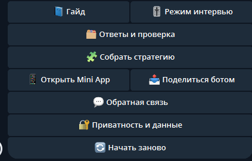

Что проверять
Source repo, Telegram setup artifact и подробную страницу с voice-to-CJM pipeline, Mini App, HTML и Excel.
Страница продукта
Voice-first Telegram-бот превращает голосовые заметки в CJM, структурированные выводы и следующий шаг для продукта или продаж.

Source repo, Telegram setup artifact и подробную страницу с voice-to-CJM pipeline, Mini App, HTML и Excel.
Упаковка голосового входа в понятный business/customer journey output.
Голосовая заметка перестает быть хаосом и становится материалом для решений.
Если human говорит голосом, агент должен вернуть структуру, а не просто transcript.
Product proof page
A Russian Telegram voice agent that converts raw spoken business notes into customer journey context, hypotheses, risks, metrics and next actions.
Public source repository, Telegram workflow artifacts and the detailed voice-to-CJM product page.
Designed the voice-input workflow and packaged it into a structured customer journey output.
Transforms unstructured founder or sales notes into decision-ready product context.
The agent does not stop at transcription; it returns structured business intelligence.